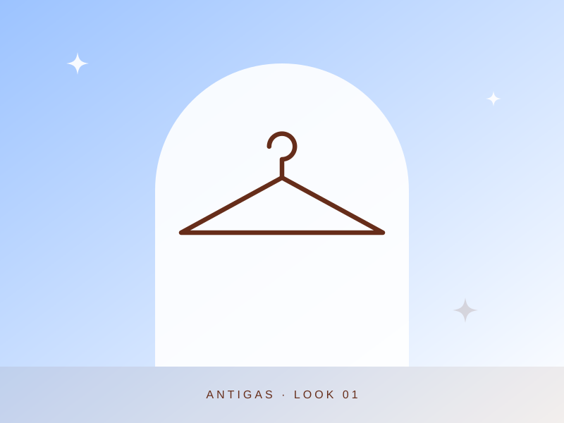
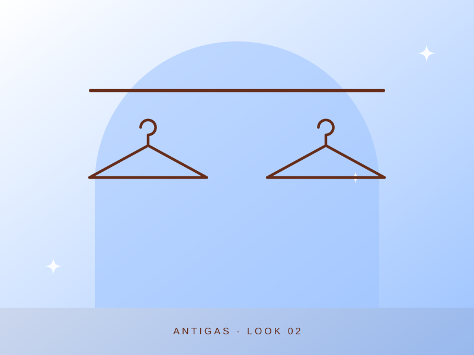

Sessão de fotos: roupas antigas
Garimpos dos anos 2000 com cintura baixa, estrelas e borboletas, escolhidos um a um. Veja os looks da sessão.



Garimpos dos anos 2000 com cintura baixa, estrelas e borboletas, escolhidos um a um. Veja os looks da sessão.

